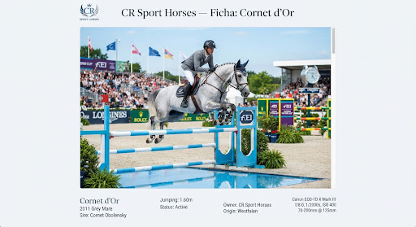
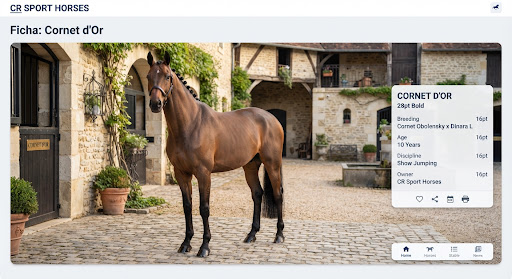
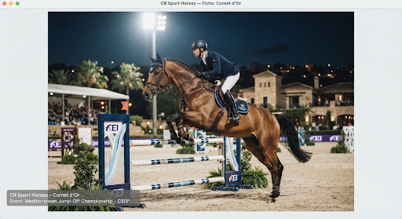
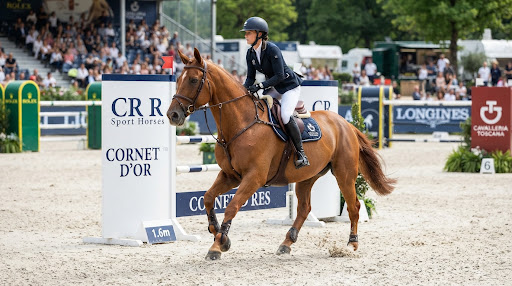
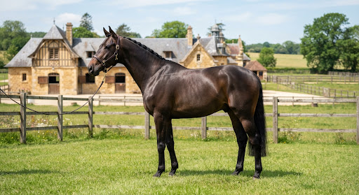

8 Años · KWPN
Selección Élite · Salto de Obstáculos
Cornet d'Or
7 años (2017) · Warmblood Belga (BWP) · Capa Castaña · Alzada: 1.68m
Condiciones de Adquisición
Consultar Disponibilidad

Ficha Oficial · BWP #056-002-W003189
verified
Foto 1 de 4
Disciplina
Salto FEI
Nivel Actual
1.35m - 1.40m
Potencial Máximo
1.50m GP
Apto Para
Junior / Amateur Ambicioso o Pro
Ubicación
Galicia, ESP
Registro Audiovisual Técnico
Ver el Caballo en Acción
Sesiones grabadas en competición oficial y pista de entrenamiento supervisadas por el equipo de tecnificación de Roi Calviño.

CSI 2* Vilamoura · Recorrido 1.35m
Cero Faltas & Jump-off Completo (4K UHD)
01
00:00 - 02:15
Recorrido CSI 1.35m sin faltas
02
02:16 - 04:40
Trabajo en llano y control de galope
03
04:41 - 07:10
Técnica sobre el salto en libertad
Análisis Deportivo
Carácter, Técnica y Alcance
“Caballo franco, enérgico y con gran técnica de remos. Extraordinaria cabeza en pista, seguro en las combinaciones complejas y con una innata voluntad de cooperación con el jinete.”
Cornet d'Or ha sido desarrollado con un enfoque biomecánico riguroso bajo la dirección de Roi Calviño. Destaca por un galope rítmico, espacioso y fácil de graduar, lo que permite abordar distancias comprometidas con calma y elasticidad. En la báscula demuestra un dorso limpio y rapidez de pies insólita en caballos de su alzada.
Excelente Galope
Gran Corazón de Competición
Manejo Fácil en Cuadra
Sin Vicios Cuadra
Métricas de Rendimiento Técnico
Alcance / Potencia (Scope)
9.5 / 10
Cuidado / Respeto (Carefulness)
9.0 / 10
Montabilidad (Rideability)
9.2 / 10
Mentalidad en Pista (Temperament)
9.8 / 10
Genealogía de Élite
Árbol Genealógico
Línea paterna de Cornet Obolensky, uno de los sementales más influyentes en la historia moderna del salto, combinada con la contundencia de Diamant de Semilly.
Padre (Sire)
Cornet Obolensky
Abuelo Pat.
Clinton (Corrado I)
Abuela Pat.
Rabanna van Costersveld (Heartbreaker)
Madre (Dam)
Golden Touch
Abuelo Mat.
Diamant de Semilly (Le Tot de Semilly)
Abuela Mat.
Touch of Class (Darco)
Logros de Linaje
- check_circle Hermano materno compitiendo a nivel 1.55m en Global Champions Tour.
- check_circle Sangre directa con triple presencia olímpica contrastada.
Garantía Médica & Transparencia
Expediente Veterinario Completo
Cada caballo en el catálogo de CR Sport Horses cuenta con una auditoría clínica exhaustiva realizada por hospitales veterinarios de referencia internacional. Facilitamos el dossier clínico íntegro a su veterinario de confianza.
radiology
28 Proyecciones
Estudio radiológico digital completo actualizado (pies, menudillos, corvejones, babillas y dorso).
Calificación 1A / Excelente
clinical_notes
Examen Físico
Inspección de flexión en firme y blando, endoscopia de vías respiratorias en esfuerzo y chequeo ocular.
Apto Sin Restricciones
science
Piroplasmosis
Certificación analítica serológica negativa (cELISA e IFI) apto para exportación internacional (USA/Global).
Export Ready
Atención Privada & Selección
¿Quieres Conocer a Cornet d'Or?
Ponte en contacto directamente con Roi Calviño y su equipo para coordinar una prueba en pista, solicitar el dossier confidencial o resolver consultas técnicas.
Otras Opciones en Catálogo
Ver Catálogo Completo
arrow_forward
Caballos de Nivel Similar

6 Años · Selle Français
7 Años · Holsteiner